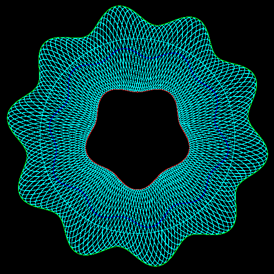

Playing Around With Guilloche Patterns
By drawing 16 curves each offset by a phase angle of PI / 8, we finally get a proper rosette:

There's nothing magic about 16, except that PI / 8 is a 1/16th of a circle, so 20 curves offset by PI / 10, or 30 curves offset by PI / 15 would work as well. In general: N curves offset by 1/Nth of a circle.
See: guilloche13.pde